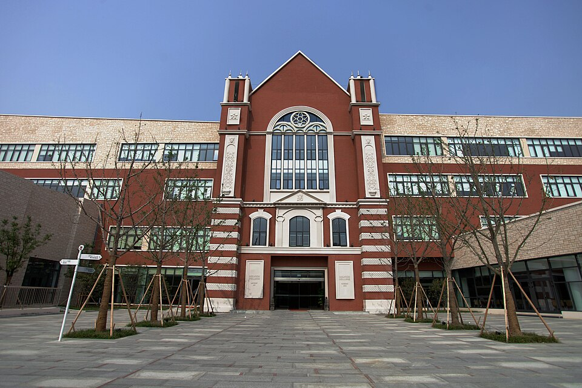

덜위치 칼리지 쑤저우 중고등 본관 · 사진: Jolly.yau / Wikimedia Commons, CC BY-SA 3.0
덜위치 칼리지 쑤저우(Dulwich College Suzhou) — 한 도시에 덜위치가 둘, 끝나는 자격이 다릅니다
⚠️ 이름 혼동 주의 — "덜위치"는 특정 교육과정이 아니라 계열(그룹) 이름입니다. 그래서 도시마다 마지막 2년이 다릅니다. 덜위치 칼리지 서울(A-Level) · 덜위치 칼리지 상하이(IB) · 덜위치 칼리지 베이징(IB). 그리고 쑤저우에는 덜위치가 두 곳입니다 — 아래 표에서 구분해 드립니다.
1. 먼저 두 학교부터 갈라 봅시다
쑤저우에서 "덜위치"라는 이름으로 검색하면 두 학교가 섞여 나옵니다. 알려진 바를 정리하면 이렇습니다.
| 확인할 것 | 덜위치 칼리지 쑤저우 | 덜위치 국제고등학교 쑤저우 |
|---|---|---|
| 문을 연 해 | 2007년으로 알려짐 | 2012년으로 알려짐 |
| 받는 나이 | 만 2세 무렵~18세(유아 과정~Year 13) | 만 14세 무렵~19세(고등 전용) |
| 마지막에 받는 자격 | IB 디플로마 | A-Level(케임브리지 계열로 소개) |
| 기숙 | 통학 중심 | 기숙 운영(학기 기숙·주중 기숙 구분) |
| 주재원 가정의 보통 선택 | 가족이 함께 거주하며 동생까지 한 학교 | 고등 2~3년만 남았고 A-Level로 마무리할 때 |
표를 한 줄로 줄이면 이렇습니다. "우리 아이가 몇 살인가"와 "어떤 자격으로 끝낼 것인가"가 학교를 정합니다. 거리나 이름이 아닙니다. 아래부터는 주재원 가정이 보통 보내게 되는 덜위치 칼리지 쑤저우 이야기입니다.
※ 학생 수·학비·연도별 시험 결과처럼 해마다 달라지는 수치는 이 글에 적지 않았습니다. 모집 학년과 조건도 해마다 바뀌니 학교 입학처에 직접 확인하세요.
2. 어떤 학교인가
덜위치 칼리지 쑤저우는 2007년에 문을 연 것으로 알려진 국제학교이고, 캠퍼스는 쑤저우공업원구(蘇州工業園區, SIP) 안에 있습니다. 공업원구는 외국계 기업과 외국인 주거가 몰려 있는 지역이라, 학교와 집과 직장이 한 생활권에 들어오는 편입니다.
학년은 만 2세 무렵의 유아 과정부터 Year 13까지로 소개됩니다. 즉 유아부터 졸업까지 한 학교에서 이어 갈 수 있는 구조입니다. 유아 구간은 영어와 중국어를 함께 쓰는 이중언어 접근으로 운영되는 것으로 알려져 있고, 중국어는 그 위 학년에서도 과목으로 이어집니다. → 중국어(HSK) 가이드
3. 핵심 — 한 학교를 다녀도 평가 규칙이 세 번 바뀝니다
이 학교를 고를 때 가정이 꼭 알아야 할 것은 구간마다 성격이 달라진다는 점입니다. 알려진 구조는 이렇습니다.
| 구간 | 운영 방식(알려진 바) | 중간에 합류할 때의 난이도 |
|---|---|---|
| 유아 과정 | 영어·중국어 이중언어 접근 | 합류가 가장 쉬움 — 언어가 놀이로 들어감 |
| 유치원~Year 9 | 영국 국가교육과정(국제학교용으로 조정) | 비교적 수월 — 다만 학습 영어가 관건 |
| Year 10~11 | IGCSE 2년 과정 | 중간 합류가 가장 어려움 — 2년이 한 묶음 |
| Year 12~13 | IB 디플로마 | 2년 과정이라 중간 합류가 사실상 어려움 |
가정이 체감하는 가장 큰 변화는 Year 11에서 Year 12로 넘어갈 때 옵니다. 그 전까지는 과목별 외부 시험을 향해 달리는 영국식 구조인데, 디플로마로 들어가면 2년짜리 과제 관리와 글쓰기 비중이 크게 늘어납니다. 그래서 준비는 Year 12가 아니라 Year 10 무렵에 시작해야 효율이 좋습니다. → IGCSE 과목 선택 · IB DP 점수
📌 주재원 임차 주기와 어긋나는 계산 — 주재 계약은 보통 2~3년인데, 이 학교에는 2년짜리 묶음이 두 번(IGCSE·디플로마) 있습니다. 집을 계약하기 전에 종이에 세 줄만 적어 보세요. ① 아이가 Year 10이 되는 해 ② Year 12가 되는 해 ③ 우리 계약이 끝나는 해. 세 줄이 어긋나면 그 지점이 나중에 가장 아픈 자리가 됩니다. → 편입·전학 총정리
4. 중국 본토 학교라서 먼저 확인할 것 — 등록 자격
중국 본토의 국제학교는 아무나 등록할 수 있는 구조가 아닙니다. 외국 국적 자녀를 위한 학교라는 별도 범주에 속하고, 지역 교육 당국이 정한 등록 자격 안에서만 받을 수 있습니다. 자격 유형의 이름과 요구 서류는 학교·연도마다 다르게 안내되므로 이 글로 자격을 판단하지 마시고 반드시 입학처의 올해 안내를 확인하세요.
이 내용은 따로 정리해 두었습니다. → 중국 본토 국제학교 등록 자격(SCIS 상하이 편)
5. 쑤저우라는 도시 — "상하이 옆"이라는 말에 속지 마세요
한국에서 보면 쑤저우는 상하이 옆 도시로 보입니다. 그래서 "상하이 학교에 보내면 되지 않나" 하는 질문을 자주 받습니다. 지도에서는 가깝지만 매일 다니는 통학은 완전히 다른 문제입니다. 두 곳은 행정구역이 다른 별개 도시이고, 아이가 매일 왕복한다면 수업보다 이동에 더 긴 시간을 씁니다. 방과후 활동을 하는 학년이면 귀가가 크게 늦어집니다.
정리하면 이렇습니다.
· 쑤저우에 근무하면 쑤저우 학교를 보는 것이 기본입니다. 상하이 학교는 통학이 아니라 이사의 문제로 보셔야 합니다. → 상하이 지역 과외
· 공업원구 안에 거주하면 생활권·학교·직장이 한 덩어리로 묶여 동선이 단순해집니다.
· 다만 통학 버스 노선과 실제 소요 시간은 해마다 바뀝니다. 집을 계약하기 전에 학교에 물어보세요. → 통학·스쿨버스 정리
6. 한국(주재원) 학생이 겪는 어려움
· ① "영어 회화는 되는데 점수가 안 오른다." 생활 영어가 아니라 학습 영어의 문제입니다. 영국식 과제는 요구하는 형식이 분명해서, 형식을 모르면 내용이 좋아도 중간 점수에 머뭅니다. → 영어 공부법
· ② "수학은 아는데 서술에서 깎인다." 한국에서 계산은 충분히 훈련돼 있는데 영어 용어와 풀이 과정 서술에서 막힙니다. → 알지브라 공부법
· ③ 중국어가 과목으로 들어옵니다. 한국 학생은 한자어 덕을 보지만 간체자와 성조는 따로 쌓아야 합니다. 수준별 반 배치가 있는 경우가 많아, 중등 편입이라면 그 학년에 입문 갈래가 열리는지부터 물어보셔야 합니다.
· ④ Year 10에 합류하면 가장 힘듭니다. IGCSE는 2년이 한 묶음이라, 중간에 들어가면 이미 돌아가는 기차에 올라타는 셈입니다. → 숙제·과제 관리
7. 그래서 이렇게 준비합니다
· 첫째, 합류 학년을 먼저 적습니다. Year 9 이하면 비교적 여유가 있고, Year 10 전후면 과목 선택이 바로 걸립니다.
· 둘째, 영어는 "읽고 쓰는 영어"로 좁힙니다. 교과 지문 요약, 지시어대로 문단 구성하기입니다.
· 셋째, 수학은 용어와 서술을 먼저, 진도는 그다음입니다.
· 넷째, Year 10 무렵에 디플로마 대비를 시작합니다. 2년 뒤 글쓰기 분량을 미리 당겨 연습해 두는 것이 가장 효과가 큽니다. → 과목 신청 · 형성평가·총괄평가
8. 쑤저우의 강점 — 시차 1시간, 화상과외가 편한 지역
중국은 한국과 시차가 1시간입니다. 아이가 학교에서 돌아온 저녁 시간이 한국 선생님의 수업 가능 시간과 거의 그대로 겹칩니다. 쑤저우는 상하이·베이징보다 한국인 가정이 적어 현지에서 한국어로 설명해 줄 선생님을 찾기 어려운 편인데, 화상 수업은 그 차이를 메우기에 적합합니다.
권해 드리는 방식은 단순합니다. 그 과목 수업이 있는 날의 전날 저녁에 한 번, 과제가 나온 주에 한 번 더 봅니다. 마감 전날 몰아서 보는 것보다 성적이 훨씬 안정적으로 올라갑니다.
정리
쑤저우에는 이름이 닮은 덜위치가 둘이고, 하나는 유아부터 받아 IB 디플로마로 끝나며 다른 하나는 고등 전용으로 A-Level로 끝납니다. 덜위치 칼리지 쑤저우는 2007년 개교로 알려진 학교로 공업원구 안에 있고, 영국식 → IGCSE → IB 디플로마 순으로 평가 규칙이 바뀝니다. 가정이 가장 먼저 할 일은 아이가 Year 10·Year 12가 되는 해를 적어 보는 것입니다. 30분 무료 수업으로 아이의 현재 영어·수학 상태를 먼저 확인해 보시기 바랍니다. (모집 학년·등록 자격·과정 구성은 해마다 달라지니 반드시 학교 요강을 직접 확인하세요.)